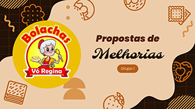
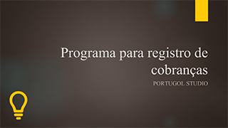
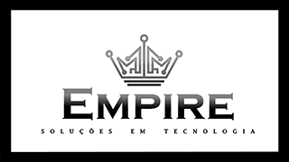
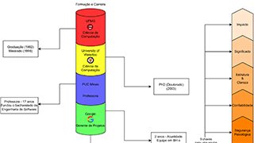

| Durante meus estudos no SENAI, desenvolvi os seguintes trabalhos: |
|  | Com base no estudo de caso da empresa Bolachas Vó Regina, foi criada uma apresentação com melhorias a serem apresentadas para os sócios. |
|  | Criação de um programa de registro de cobranças, no Portugol, que atende às necessidades do vendedor Fernando. Com isso, foi elaborada uma apresentação sobre o programa desenvolvido e foi feita uma planilha no Excel com as horas gastas para o serviço. |
|  | Apresentação da equipe Empire, sua história, objetivo, logomarca, responsabilidades de cada integrante e seu diferencial perante às demais equipes do mercado. Também foi feito um vídeo sobre a equipe no padrão Elevator Pitch e uma planilha contabilizando as horas de serviço. |
|  | Elaboração de um mapa mental sobre a palestra da Maria Augusta Nelson, Gerente de Projetos da Google, realizada no SENAI CTTI. |